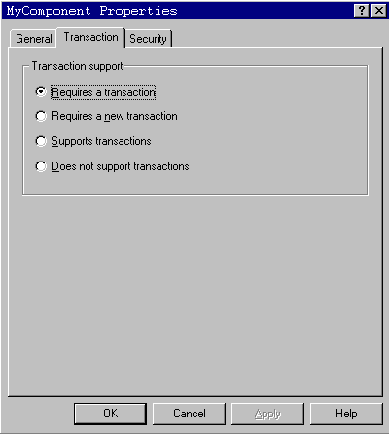
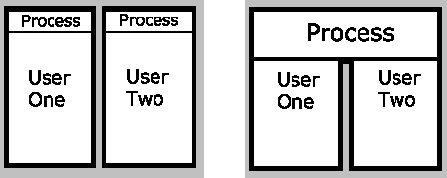
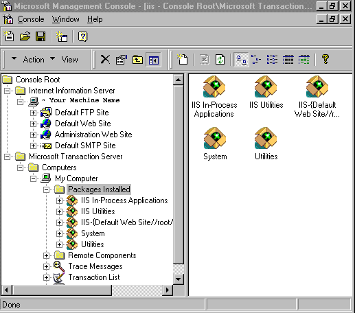

|
| ||
|
| ||
James Utzschneider
Microsoft Corporation
February 6, 1998
Contents
Introduction
What Is MTS, and Why Combine It with IIS?
Using IIS and MTS to Create a Transaction for a Web Page
Web Server as Application Platform
When Microsoft shipped Internet Information Server (IIS) 3.0 one year ago, it introduced Active Server Pages (ASP). ASP enables Web developers to write scripts that run on the server or the client. This technology makes it easy for Web developers to build server applications that work with any Internet browser. An Active Server Page consists of HTML, scripts, and Component Object Model (COM) components that developers combine into a Web application. ASP also separates presentation logic from business logic, enabling three-tier business applications on the Web. (For more information on ASP, see An ASP You Can Grasp: The ABCs of Active Server Pages and the ASP Overview  .)
.)
Microsoft Transaction Server (MTS) 2.0 is integrated with IIS 4.0, which recently shipped. This integration of MTS and ASP makes ASP much more powerful without changing the programming model that made it so successful. This article talks about why MTS was integrated into the IIS architecture, describes the three major benefits of this integration, and shows how easy it is to develop server-side components that use MTS.
MTS is a new kind of middleware, software that makes it easier to build and scale distributed applications running on servers. For example, banks, manufacturers, telephone companies, and other large enterprises have run their most important business applications on software like Transaction Processing (TP) Monitor software like IBM's CICS and IMS. A TP Monitor is a type of middleware that enables business applications to scale to support a large number of users and run reliably. TP Monitors do this by acting as big application multiplexors; that is, they enable system resources like processes and threads to be shared across thousands of concurrent users. Applications using TP Monitors run reliably through the use of transaction protocols that ensure that work executes properly and writes to disk accurately.
Unfortunately, developers cannot use modern programming languages like Visual J++™ or Visual Basic® to write applications that run on traditional TP Monitors. To make TP Monitor services easier to use for a broad pool of developers, Microsoft turned to Object Request Brokering (ORB) technology based on COM.
ORBs, like TP Monitors, are a type of middleware. ORBs make the development and deployment of distributed applications built from component software easier. ORBs create objects, know where they are, and provide services separate from the code. This eliminates network programming and object management from coding.
In combining TP Monitor technology with ORB technology, MTS pioneered a new type of middleware engine that the Gartner Group called an Object Transaction Monitor, or OTM. OTMs integrate the scalability and reliability services of a TP Monitor with the distributed object brokering services of an ORB. In short, MTS serves as a container for COM components running in the middle tier of a three-tier application.
Developing server-side components that use MTS is relatively easy for an experienced developer. MTS components are implemented as "single user" COM DLLs, where developers focus on implementing business functions and not on complex, multiuser programming issues like thread creation or termination and user concurrency in writing middle-tier business logic.
Developers can write these components in any language that supports COM, including Microsoft Visual Basic, Visual C++®, Visual J++, Sybase PowerBuilder, Borland Delphi, MicroFocus COBOL, and Oracle Objects for OLE.
MTS enables components to automatically execute within transactions, a software mechanism that ensures that software programs execute reliably. At a low level, MTS uses a two-phase commit protocol to coordinate the participants in the transaction. For example, a Web application designed to sell books on the Internet may involve five components and three database tables. MTS ensures that all eight of these elements always work together and complete a task, or that none of them do, to make sure that the Web site never has inconsistent or incorrect results.
Unlike traditional TP Monitors, MTS does not require developers to insert complex transaction processing code directly into their programs. Developers do not have to write begin transaction, end transaction, enlist specific databases on a transaction, or track transaction IDs across different components or processes. With MTS, transaction support simply becomes a type attribute of component's class that is configured using the MTS Explorer. The MTS Explorer is hosted within the MMC.

Figure 1. Microsoft Transaction Server Explorer
MTS implements scalability services that enable these "single-user" components to scale to support a large number of concurrent users. One of these services is a thread pool. MTS creates and runs multiple component instances -- one for each caller -- within a single process. This enables single-user components to execute in a multiuser environment without requiring a process-per-user architecture. The diagram below illustrates this architecture.

Figure 2. Process per single user (left) and MTS single user components in a multiuser environment (right)
MTS multiplexes connections to system resources. Often in a distributed application, the system cost of establishing a connection to a back-end resource like a database far exceeds the system cost of the work involved in, for example, updating a record. To overcome this problem, MTS pools connections to back-end resources like databases.
Applications based on distributed objects can encounter scalability problems due to difficulties involved with state management. For example, in a sales management application built with distributed objects with 500 users, there may be 500 concurrent requests from client systems to create a separate instance of a customer object. 500 instances of a customer object that maintains state on a server may cause a server to stall.
MTS provides two related component state management scalability services: Just-in-Time (JIT) Activation and As Soon as Possible (ASAP) Deactivation. Here's how they work: clients create components inside of MTS, get a reference to the component, and start working with it. When a particular set of work is done -- for example, updating a customer record in a sales management system -- a developer makes a call to MTS that deactivates the component. This releases component state, serves as a transaction boundary, and enables server applications to scale. The client still maintains a reference to the server component, so the next time it requests work, MTS uses JIT Activation to fire up a new instance of component. When Microsoft shipped MTS a year ago, it described this capability to activate and deactivate server components as a stateless programming model. A more accurate description is a state-precise programming model, because MTS enables developers to precisely manage the amount of state stored in server-side components.
MTS includes a facility for configuring DLL components into application packages that serve as units of execution and deployment. Packages run in a single system process and serve as a security boundary. Developers can deploy all of their application components into a single package, and partition the application so that half of the components run in one package and half of the components run in another package. These two packages can run on separate servers without requiring developers to change how the components are implemented. Microsoft calls this capability to partition an application across multiple back-end servers static load balancing.
MTS enables middle-tier components running on Windows NT® Server to integrate with both clients on resource managers that run on legacy platforms. Windows and UNIX clients can call MTS components via DCOM. MTS does not require the installation of client-side libraries and has no client footprint. While MTS itself doesn't have a footprint, it may be called by COM components installed on a client machine, using Distributed Component Object Model (DCOM) as the network protocol (you can use the MTS Explorer to automatically install the client side of MTS applications).
MTS uses industry-standard transaction processing protocols to integrate with databases and TP Monitors running on legacy UNIX and mainframe systems. MTS includes native transaction support for Microsoft SQL Server and Microsoft Message Queue Server using OLE Transactions, a distributed object-based transaction protocol. MTS implements the Open Groups XA transaction protocol, enabling middle-tier COM applications to work with Oracle, IBM DB2, Informix, and Sybase databases on Windows NT, UNIX, and other platforms. MTS 2.0 also ships with a transactional ODBC driver for Oracle's driver.
SNA Server 4.0 includes COM Transaction Integrator (COMTI), formerly known as "Cedar," a technology that enables MTS applications to enlist in mainframe CICS and IMS applications using IBM's SNA LU 6.2 Sync Level 2. Thus developers can build new, transacted applications using components that integrate with legacy mainframe applications.
MTS's ability to integrate through transactions Oracle on UNIX, CICS on mainframes, and SQL Server on Windows NT servers creates an application integration environment for middle-tier components that enables companies to leverage investments in existing systems.
The MTS application environment includes the Transaction Server Explorer, a Microsoft Management Console (MMC) snap-in that provides developers and administrators with a Graphical User Interface (GUI) management environment. The Explorer enables developers to install components into MTS, configure transaction and security support, deploy MTS applications across clients and server, and monitor transaction throughput and performance.
In addition to DCOM clients, MTS supports HTML clients through Active Server Pages (since the release of IIS 3.0). An ASP script can invoke a component running inside of MTS, even components that are also being invoked through DCOM clients. Supporting both "thin" HTML clients and "smart" DCOM clients from a common component-based middle-tier application that is integrated with legacy systems makes IIS with MTS a powerful application platform for Web applications.
And this powerful platform just got better with IIS 4.0. In IIS 4.0, ASP uses MTS 2.0 as its application engine. The two technologies ship together in the Windows NT 4.0 Option Pack, use a common thread pool, and both use Microsoft Management Console (MMC) as a common management console.

Figure 3. Microsoft Management Console
IIS 4.0 ASP scripts run as MTS applications. Developers can configure their Web applications to run out-of-process, enabling the application to execute in its own MTS package. This provides crash protection for ASP applications.
The integration of IIS and MTS enables developers to configure their Web pages to execute within an MTS transaction. The ASP script below shows how:
<% TRANSACTION=REQUIRED %>
<%
...
Set objAd = Server.CreateObject("bus_Ad.Ad")
objAd.PlaceAd(...)
...
Sub OnTransactionCommit()
Response.Write "Ad has been placed"
End Sub
Sub OnTransactionAbort()
Response.Write "Error has occurred"
End Sub
%>
The <% TRANSACTION = REQUIRED%> tag in an Active Server Page (.asp file) enables MTS to create a transaction for the page. All components invoked within the page (and subsequent component and database calls that flow from these components) can execute within a single MTS transaction, with full rollback and recovery.
IIS 4.0 transactional Web pages include transactional events that developers can use to fork application flow based on transaction outcome. The above example displays different text strings based on transaction outcome. This is a simple, powerful tool for developers building business applications for the Web.
As developers deploy the next generation of Web applications, they face the dilemma of integrating production applications with Web technology. The integration of MTS and IIS turns the Web server into an application platform with integrated, enterprise technology for building great applications on the Web. For additional information on MTS, please visit the MTS Web site.
Author James Utzschneider is the lead program manager for the Microsoft Transaction Server team.
Did you find this material useful? Gripes? Compliments? Suggestions for other articles? Write us!
© 1999 Microsoft Corporation. All rights reserved. Terms of use.